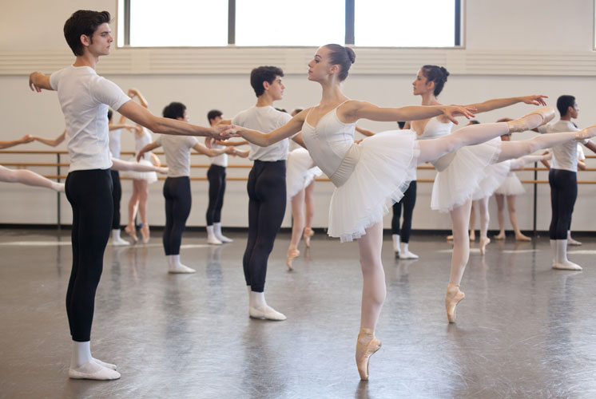

Gigi's Ballet Academy is nationally recognized as a premier dance school offering intensive classical ballet training to students from ages 7 to 18. Director Gigi Park, former principal dancer with American Ballet Theatre, founded GBA in 2002 with the express mission of preparing her students for a career in professional dance by providing comprehensive classical training and education.
Faculty
GBA's instructors are dedicated to the principles of classical ballet. Many danced at some of the most famous ballet companies in the world. Check out members of our faculty.
Year-End Recital
Every spring, GBA presents a year-end recital featuring students of each graduating class. Students dance carefully selected variations from both 19th century classics as well as modern works. Check out recital performances from previous years.
Adult Classes
GBA welcomes dance students of all ages, including adults. Whether you're a former dancer looking to brush up on your skills or a total beginner who's just curious about ballet, GBA has the perfect class for you.